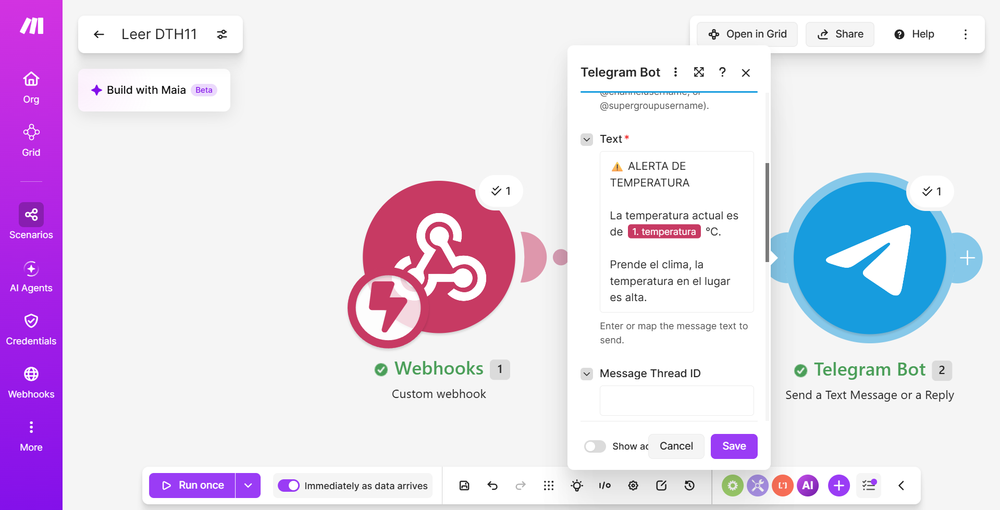

Evidencias del Proyecto Arduino_DTH11_MAKE_TELEGRAM
Haz clic en los enlaces para ver cada evidencia:
📄 Reporte de Resultados de las Prácticas
📄 Reporte Técnico de Automatización
🗂 Blueprint del Escenario (JSON)
🎥 Evidencia en Video
📷 Evidencia en Imagen
